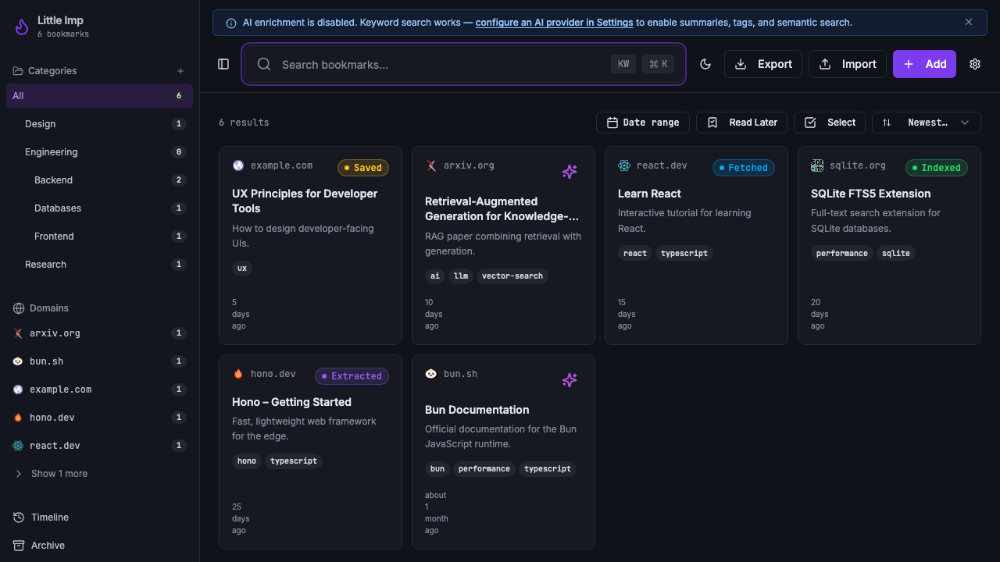
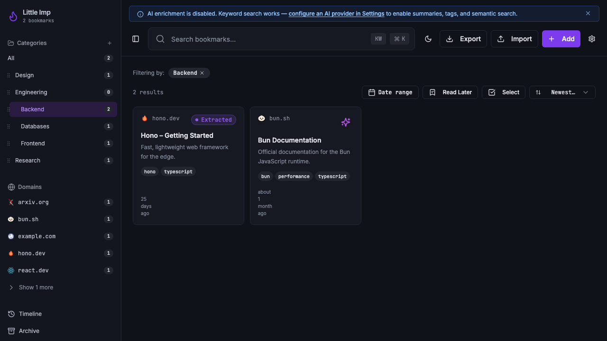
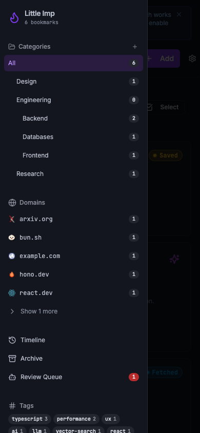

Grimoire Task Report
Sidebar Categories From Full Tree

Before
The sidebar category list was derived from the currently loaded bookmark page. Categories with no loaded bookmarks disappeared, nested hierarchy was flattened by count sorting, and the frontend sent category ids to list and search endpoints even though the API contract documents category-name filters.
Problem
TASK-095 needed category navigation to reflect the full GET /categories tree instead of the current library result set, while keeping existing category selection, create, rename, delete, move, and drag behavior intact.
Changes Added
- Flattened the cached daemon category tree into sidebar rows that preserve response order, parent id, depth, and
bookmark_count. - Rendered nested categories with visual indentation and stable category row metadata.
- Added sidebar category loading, empty, and error states.
- Added id-based category filtering for list, search, and export while preserving the existing category-name filter.
- Tracked the selected category id internally so duplicate category labels in separate branches do not highlight, toggle, or filter together.
- Hardened category rename and delete handling so duplicate-name selections only update when the selected category id is the mutated category.
- Regenerated
API.mdanddocs/api-contract.jsonfrom the daemon contract to documentcategory_idfilters. - Added focused hook and sidebar tests for empty categories, nested category rendering, and category filter requests.
Result
Navigation
Empty top-level categories such as Engineering stay visible, and child rows such as Backend, Databases, and Frontend remain grouped beneath the parent in daemon response order.
Filtering
Selecting a nested category now applies an id-stable daemon filter. The Backend filter returned the two expected seeded bookmarks during visual verification, and duplicate category names are disambiguated by id.
Verification
npx vitest run src/hooks/use-bookmarks.test.ts src/lib/export-url.test.ts src/components/AppSidebar.test.tsxpassed with 38 tests.bun test daemon/src/test/integration/bookmarks.test.ts daemon/src/test/integration/search.test.tspassed with 36 tests.npm run lintexited 0 with the repository's existing 9 warnings.npm run type-checkpassed.npm testpassed with 199 tests.npm run test:daemonpassed with 386 tests.npm run docs:api:checkpassed.npm run buildpassed with the existing Vite chunk-size warning.npm run test:e2epassed with 19 tests.git diff --checkpassed.- Browser visual verification used an isolated seeded daemon on
127.0.0.1:33210and Vite on127.0.0.1:18080.
Additional Screenshots


Implementation Notes
The UI still sends category-name filters because the daemon contract currently defines category query parameters as names. The sidebar also keeps the selected category id locally for row identity, create, rename, delete, move, and drag operations.
Files Changed
src/hooks/use-bookmarks.tssrc/hooks/use-bookmarks.test.tssrc/components/AppSidebar.tsxsrc/components/AppSidebar.test.tsxsrc/pages/Index.tsxtasks/done/TASK-095-sidebar-categories-full-tree.md